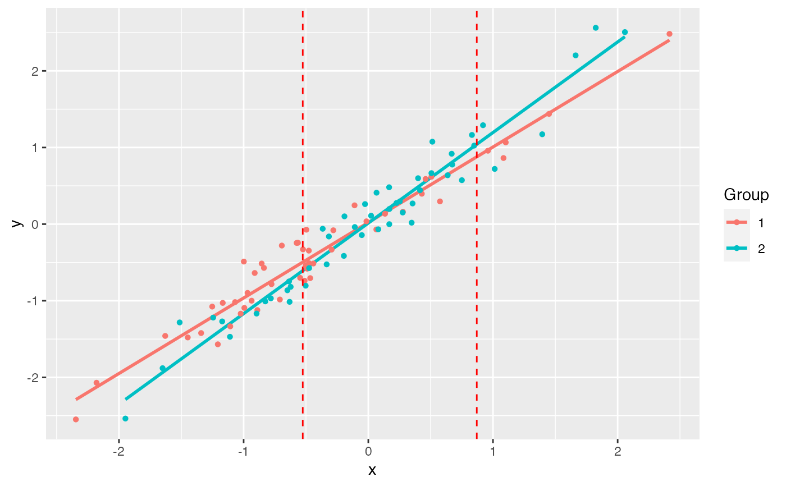

Carry out the Johnson-Neyman Technique
| Package: | jnt |
| Type: | Package |
| Version: | 0.4 |
| Date: | 2016-09-14 |
| License: | GPL-2 |
| LazyLoad: | yes |
| LazyData: | yes |
Johnson PO, Neyman J (1936) Tests of certain linear hypotheses and their application to some educational problems. Statistical Research Memoirs 1:57-93.
Hunka S, Leighton J (1997) Defining Johnson-Neyman regions of significance in three-covariate ANCOVA using Mathematica. Journal of Educational and Behavioral Statistics 22: 361-387.
White CR (2003) Allometric analysis beyond heterogenous regression slopes: Use of the Johnson-Neyman Technique in comparative biology. Physiol Biochem Zool 76: 135-140.
Examples:
White CR (2003) The influence of foraging mode and arid adaptation on the basal metabolic rates of burrowing mammals. Physiol Biochem Zool 76: 122-134.
Lavin SR, Karasov WH, Ives AR, Middleton KM, Garland T, Jr (2008) Morphometrics of the avian small intestine compared with that of nonflying mammals: A phylogenetic approach. Physiol Biochem Zool 81: 526-550.
Kevin Middleton (middletonk@missouri.edu)
Maintainer: Kevin Middleton (middletonk@missouri.edu)
#> #> jnt> # Simulate data #> jnt> set.seed(1234) #> #> jnt> n <- 50 #> #> jnt> x1 <- rnorm(n) #> #> jnt> y1 <- x1 + rnorm(n, sd = 0.2) #> #> jnt> x2 <- rnorm(n) #> #> jnt> y2 <- 1.25 * x2 + rnorm(n, sd = 0.2) #> #> jnt> df1 <- data.frame(x = x1, y = y1) #> #> jnt> df2 <- data.frame(x = x2, y = y2) #> #> jnt> (jnt.out <- jnt(df1, df2))#>#>#> #> Johnson-Neyman Technique #> #> Alpha = 0.05 #> #> Data 1: #> Slope 0.9853 #> Intercept 0.02126 #> #> Data 2: #> Slope 1.182 #> Intercept 0.01386 #> #> Region of non-significant slope difference #> Lower: -0.5258 #> Upper: 0.8701 #> #> #> jnt> plot(jnt.out)#>